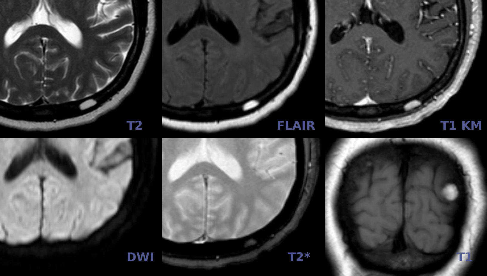
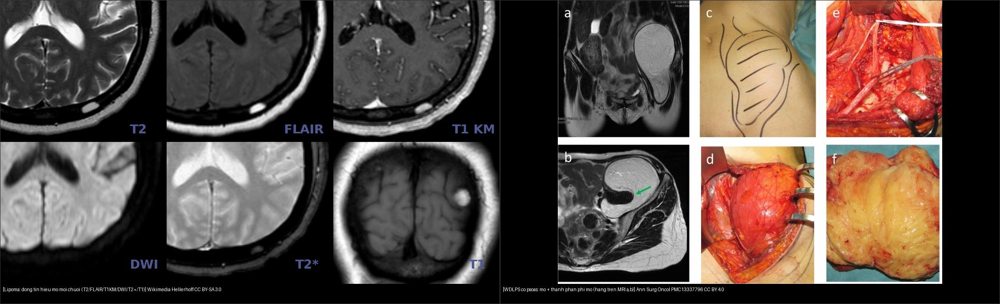
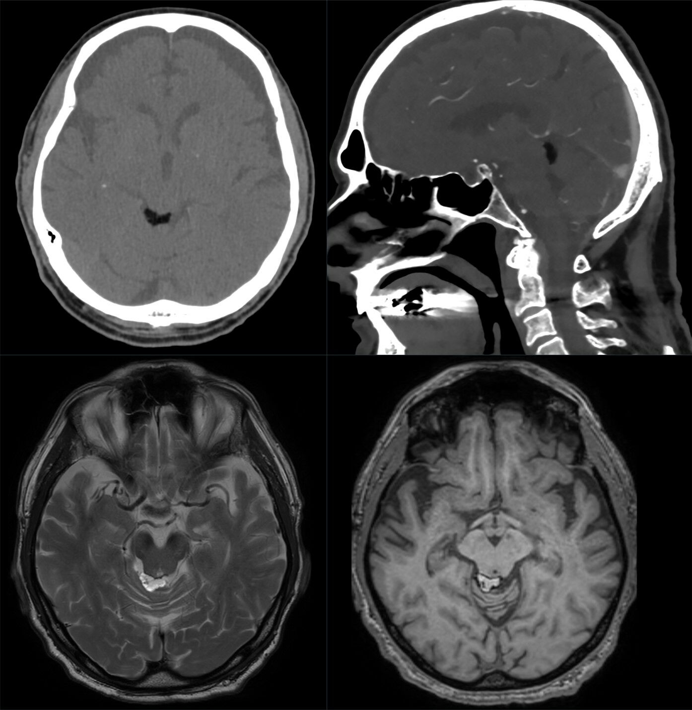
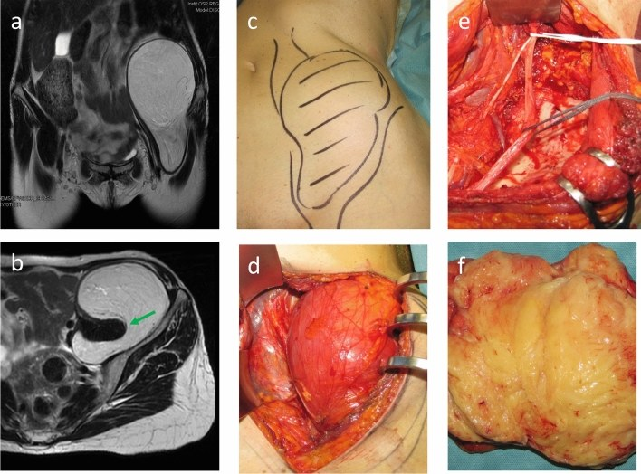

375 — U phần mềm: lipoma vs liposarcoma biệt hóa tốt / Soft tissue tumors
Tags: pattern:u-phan-mem vung:phan-mem
Mức chắc chắn (certainty): tổng hợp y văn (literature synthesis) — nhóm tự biên từ y văn mở, chưa gắn ca nguyên văn đơn lẻ.
1. Tổng quan — mỡ thuần vs mỡ lẫn thịt + MDM2/CDK4
- Lipoma: mỡ trưởng thành thuần — TẠI SAO đồng tín hiệu mỡ mọi xung + mất hoàn toàn trên fat-sat + không ngấm: 100% tế bào mỡ, không thành phần thịt.
- Liposarcoma biệt hóa tốt (ALT/WDL): mỡ + vách xơ + nốt thịt + MDM2/CDK4 (+) — TẠI SAO vách dày > 2 mm + nốt đặc ngấm là ác: thành phần phi mỡ tăng sinh.
- Ngưỡng: sâu + > 10 cm + vách > 2 mm + nốt đặc = ác đến khi chứng minh ngược lại; nông + < 5 cm + đồng nhất = lành.
- Ngưỡng độc lập với kích thước: khuếch đại MDM2 mức cao là tiêu chuẩn vàng mô học (pathognomonic) của WDL/DD và loại trừ các dưới nhóm khác (myxoid round cell, pleomorphic). Trong đoàn hệ 254 ca, u WDL khoang sau phúc mạc rất lớn (trung vị 20 cm ở nhóm cơ đái chậu, 25 cm nhóm khoang sau phúc mạc khác) so với 15 cm ở chi.

Sáu chuỗi xung (T2 – FLAIR – T1 sau tiêm – DWI – T2 – T1) của một lipoma: tổn thương đồng tín hiệu với mỡ dưới da trên MỌI chuỗi (sáng trên T1/T2, tối trên FLAIR/fat-sat, không ngấm). Nguồn: Hellerhoff, Wikimedia Commons, CC BY-SA 3.0.*2. Gamut khối phần mềm (Gamut)
- Mỡ thuần + nông + < 5 cm + không ngấm: lipoma — bóc đơn giản/theo dõi.
- Vách > 2 mm + nốt đặc + sâu + > 10 cm + MDM2 (+): WDL/ALT — mổ rộng + theo dõi tái phát/biệt hóa xấu.
- Myxoid + mạch lưới + T2 sáng: myxosarcoma — mổ + xạ.
- Máu tụ sau chấn thương + không ngấm + teo dần: hematoma — theo dõi, đừng sinh thiết vội.
3. Bảng so sánh phân biệt (ma trận đối chiếu)
| Thực thể (entity) | Hình ảnh điển hình | Chốt vào (rule-in) | Chốt loại (rule-out) | Gợi ý xác nhận |
|---|---|---|---|---|
| Lipoma | Mỡ thuần + mất hoàn toàn fat-sat + không ngấm + nông < 5 cm | Đồng mỡ + không vách/nốt | Vách > 2 mm + nốt → WDL | Bóc/theo dõi |
| WDL/ALT | Vách > 2 mm + nốt đặc ngấm + sâu + > 10 cm + MDM2/CDK4 (+) | Vách/nốt + sâu + lớn + MDM2 | Mỡ thuần → lipoma | Mổ rộng + FISH MDM2 |
| Myxosarcoma | Myxoid T2 sáng + mạch lưới + ngấm lan | Nhầy + mạch + sâu | Mỡ thuần → lipoma | Mổ + xạ |
| Hematoma | Sau chấn thương + mức dịch-máu + không ngấm + teo dần | Chấn thương + teo theo thời gian | Lớn dần + ngấm → u | Theo dõi 6–8 tuần, sinh thiết khi lớn dần |

Trái: lipoma — mỡ thuần, đồng tín hiệu mỡ mọi chuỗi, mất tín hiệu khi fat-sat, không ngấm. Phải: WDLPS cơ đái chậu — mỡ lớn nhưng có thành phần phi mỡ/thành dày (hàng trên a,b là MRI). Nguồn: Hellerhoff/Wikimedia CC BY-SA 3.0 & Ann Surg Oncol PMC13337796 CC BY 4.0. Ảnh ghép letterbox.Vì sao fat-sat là chốt phân biệt mỡ
- Bản chất vật lý: mô mỡ T1W sáng (thời gian T1 ngắn) và T2W sáng; chuỗi bão hòa mỡ (fat-sat) triệt tín hiệu mỡ → lipoma mất tín hiệu hoàn toàn (tối đen), còn thành phần thịt/máu/nhầy không phải mỡ sẽ còn sáng.
- Chốt vào: đồng tín hiệu mỡ trên T1 + T2 và tắt hoàn toàn trên fat-sat = mỡ thuần.
- Chốt loại: còn nốt/thành sáng ≥ 2 mm không tắt trên fat-sat, hoặc ngấm thuốc = có thành phần phi mỡ → cảnh giác WDL/ALT.
4. Protocol u phần mềm
- MRI + gadolinium + đo 3 chiều + MDM2/CDK4/FISH khi sâu + > 5 cm + không đồng nhất; sinh thiết lõi có kế hoạch (tránh đường mổ triệt căn).
flowchart TD
A[Khối phần mềm] --> B{Mỡ thuần + <5cm + nông?}
B -->|Có| C[Lipoma: bóc/theo dõi]
B -->|Không: vách/nốt/sâu| D[WDL?: MDM2 + mổ rộng]
5. Cạm bẫy
- Hematoma mạn vôi hóa giả sarcoma — chấn thương + teo dần + không ngấm là theo dõi.
- Sinh thiết WDL đường sai nhiễm bẩn khoang — trung tâm sarcoma phần mềm trước.
- Lipoma sâu > 10 cm vẫn có thể WDL — kích thước + vị trí sâu là sinh thiết, đừng bóc mù.
- CT đo được mỡ: lipoma có tỷ trọng mỡ (−30 đến −100 HU), đồng tỷ trọng với mỡ dưới da; nhưng mỡ đơn thuần trên CT KHÔNG loại được WDL vì WDL phần lớn là mỡ — phải MRI fat-sat mới thấy thành phần phi mỡ.
- Hội chứng đè ép/thẩm mỹ: khối mỡ lành nhưng chèn ép thần kinh-mạch (lipoma cơ, lipoma dây chằng) vẫn có chỉ định mổ — quyết định theo triệu chứng, không chỉ mô học.

Trên: CT (ngang + dọc) — tổn thương mỡ tỷ trọng thấp (đen). Dưới: MRI T2 (trái) và T1 (phải) — mỡ sáng trên T1/T2. Nguồn: Hellerhoff, Wikimedia Commons, CC BY-SA 4.0.6. Tự lượng giá — Blind Quiz (ảnh trơn ngoài, đáp án ẩn)
Ca 1 — Tình cờ phát hiện tổn thương nhỏ ở vòm sọ trên MRI. So 6 chuỗi xung: tổn thương "đi theo" mô nào?
- Gợi ý: không đau, không tiền sử chấn thương; tổn thương nhỏ, bờ rõ.
- Câu hỏi: Tín hiệu tổn thương so với mỡ dưới da? Chuỗi nào chốt bản chất mỡ? Chẩn đoán + xử trí?
Bấm để hiện đáp án (findings + chẩn đoán)
- Tổn thương đồng tín hiệu với mỡ dưới da trên mọi chuỗi: sáng trên T1/T2, tắt trên FLAIR (fat-sat), không ngấm sau tiêm — lipoma.
- Xử trí: theo dõi, chỉ bóc khi chèn ép/vì thẩm mỹ; không sinh thiết rộng.
- Nguồn ảnh: Hellerhoff, Wikimedia Commons, CC BY-SA 3.0.
Ca 2 — Khối cơ đái chậu, MRI mỡ lớn nhưng có phần phi mỡ. Lipoma hay ác?

- Gợi ý: khối lớn, sâu, không đau nhiều; MDM2 (+) trên mô học.
- Câu hỏi: Dấu hiệu nào phá vỡ "lipoma"? Xét nghiệm nào chốt? Vì sao không bóc đơn thuần?
Bấm để hiện đáp án (findings + chẩn đoán)
- WDLPS (ALT): mỡ chiếm ưu thế nhưng có thành phần phi mỡ/dải xơ dày (mũi tên xanh ở mặt phẳng ngang b) — vách > 2 mm/ngấm = chốt loại lipoma.
- Chốt xác nhận: MDM2/CDK4 (FISH) — khuếch đại mức cao đặc trưng WDL/DD LPS; mổ rộng (không bóc mù), theo dõi tái phát; u khoang sau phúc mạc trung vị 20–25 cm.
- Nguồn ảnh: Tseng et al., Ann Surg Oncol 2026 (PMC13337796), Fig 1 (hàng trên a,b = MRI), CC BY 4.0.
Ca 3 — Khối đùi nông 3 cm, mỡ thuần, mất hoàn toàn trên fat-sat, 2 năm không đổi: xử trí? (Bảng mục 3.)
Bấm để hiện đáp án
- Lipoma: theo dõi/bóc đơn giản khi vướng (không sinh thiết rộng).
Ca 4 — Khối đùi sâu 12 cm + vách 4 mm + nốt đặc ngấm: lipoma hay WDL? Xét nghiệm nào chốt? (Bảng mục 3.)
Bấm để hiện đáp án
- WDL/ALT: vách > 2 mm + nốt + sâu + > 10 cm — FISH MDM2/CDK4 (+) + mổ rộng (không bóc đơn thuần).
Bài liên quan chéo
- 300 – Tổng quan MSK
- 330 – U xương (Lodwick)
- 370 – Nhiễm trùng MSK (myositis giả u)
Ảnh
- Tên file:
NNN_slug_Modality_SourceID.jpg. Chi tiết nguồn + giấy phép từng ảnh:images/CREDITS.mdvàsources.md. - Ảnh ghép đối chiếu tạo bằng
tools/make_composite.py(letterbox, không crop/kéo giãn).
Không dùng để chẩn đoán độc lập khi chưa có người hướng dẫn.